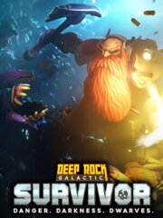

Deep Rock Galactic: Survivor
Deep Rock Galactic: Survivor
Detalles
|  | |
| Tiempo de juego | No Jugado |
| Última actividad | Nunca |
| Añadido | 30/06/2024 12:29:26 |
| Modificado | 30/06/2024 12:31:42 |
| Estado de finalización | Not Played |
| Librería | Steam |
| Fuente | Steam |
| Plataforma | PC (Windows) |
| Fecha de lanzamiento | 14/02/2024 |
| Puntuación de la Comunidad | 84 |
| Puntuación de la Crítica | |
| Puntuación de usuario | |
| Género | Action Early Access |
| Desarrollador | Funday Games |
| Editor | Ghost Ship Publishing |
| Característica | Achievements Cloud Saves Family Sharing Full Controller Support Single Player |
| Enlaces | Punto de encuentro Discusiones Guías Noticias Página de la tienda PCGamingWiki Logros |
| Tag | Action Action Roguelike Aliens Arcade arena-shooter Atmospheric Bullet Hell combat Dark Dwarf early-access Procedural Generation PvE Roguelite Sci-fi Score Attack Singleplayer Space Top down shooter Top-Down |
Descripción

Welcome, Survivor!
DEEP ROCK GALACTIC: SURVIVOR is a single player survivor-like auto-shooter. Take on hordes of lethal aliens, mine riches, and unlock powerful upgrades to survive, as you wield the full arsenal of Deep Rock Galactic. It's one dwarf against all of Planet Hoxxes!REVERSE BULLET HELL, WITH MINING
Kill bugs, upgrade your gear, and delve ever deeper into the lethal caves of Hoxxes. Collect and assemble a devastating array of guns, unleash hell upon wave after wave of alien monsters in fast and frenetic combat, and tunnel your way to collect precious riches from deep within the cave walls. With the auto-shooter gameplay, you don’t worry about aiming and firing – just run and mine for your life, as you automatically blast away.Each mission is entirely unique with its own procedural cave generation and enemy waves, just as you've come to know from Deep Rock Galactic.
COMPLETE MISSION OBJECTIVES TO BECOME STRONGER
Dig deep, Miner! Once the Drop Pod releases you into the oppressive darkness, you’re on your own. Complete the mission objectives set forth by the Company, and make it back to the Drop Pod in time to try your luck at even more deadly and lucrative encounters. Progress deeper and deeper into the planet while you grow ever stronger, survive all the way to the very end of your assignment, and finally get extracted alongside your hefty sack of loot.DEEP ROCK, FROM A WHOLE NEW PERSPECTIVE
Now you can explore the Deep Rock Galactic universe in a whole new single-player-focused experience! Play each mission from a top-down perspective, navigating the caves of Hoxxes as you've never seen them before, soaking it up through nonstop auto-shooter action. Greybeard Deep Rock veterans will recognize much from Deep Rock Galactic, and if you are a recently joined Greenbeard: Welcome all the same! We are thrilled to have you on board. You will like it here. Management requires it.Initial release on early access includes:
- 4 classes
- 42 weapons
- 20 enemy types
- 2 big bad bosses
- 4 biomes
- A deep progression system of class mods, artifacts, masteries, and upgrades
The finished version will contain even more content, and other features - all to be determined as we receive and review feedback from the community during Early Access.
ROCK AND STONE!